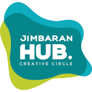

Pilihan rute dan pengalaman
Bandingkan pengalaman Jeep dan ATV dari paket yang tersedia.

JIMBARAN HUB · WISATA OFFROAD BALI
Nikmati pengalaman Bali yang berbeda. Pilih Jeep 4x4 atau ATV untuk menjelajahi jalur alam, perbukitan, dan panorama pulau bersama Jimbaran Hub.
PENGALAMAN OFFROAD PILIHAN
Dari pesona sunrise Gunung Batur, jalur hijau Ubud, hingga petualangan di Bali Selatan, temukan pilihan perjalanan Jeep dan ATV dalam satu tempat.
PILIH PETUALANGANMU
Pilih paket sesuai waktu dan gaya liburanmu.
Jelajahi Bali dengan cara berbeda.
SAATNYA KELUAR DARI RUTE BIASA
Rasakan serunya melintasi jalur alam, kawasan hijau, dan lanskap perbukitan. Pilih pengalaman yang paling cocok untuk perjalananmu.
Lihat Destinasi ↗DESTINASI PILIHAN DI BALI
Kenali kawasan yang menjadi pilihan
untuk pengalaman offroad.
Destinations will appear when the database is connected.
KENAPA JIMBARAN HUB
Temukan informasi paket, pilihan kendaraan, dan destinasi dalam satu website sebelum menentukan perjalanan.
Bandingkan pengalaman Jeep dan ATV dari paket yang tersedia.
Periksa durasi, lokasi, harga, dan detail paket sebelum melakukan pemesanan.
Tentukan petualangan yang sesuai dengan kebutuhan perjalananmu.
PILIH KENDARAAN
Vehicle details will appear when the database is connected.
GALERI PETUALANGAN
Gallery will appear when the database is connected.
PETUALANGANMU DIMULAI DI SINI
Pilih paket Jeep atau ATV dan mulai rencanakan pengalaman offroad-mu.
Temukan Paket ↗WELCOME BACK